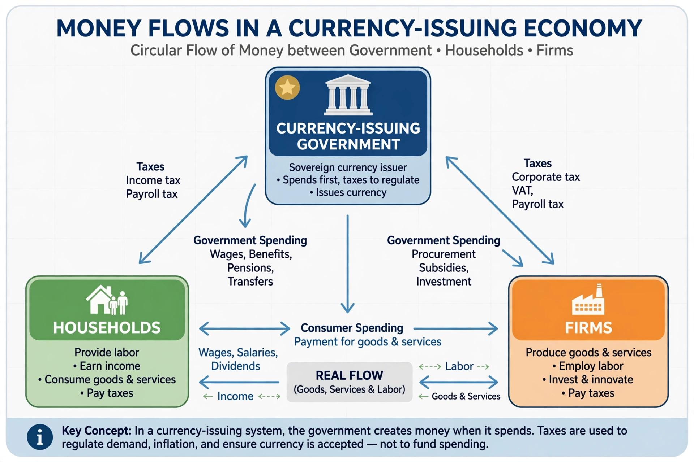

Modern Monetary Theory

| Modern Monetary Theory | |
|---|---|
| School | Post-Keynesian economics |
| Key figures | Warren Mosler, L. Randall Wray, Bill Mitchell, Stephanie Kelton |
| Core claims | Sovereign currency issuers are not revenue-constrained; inflation is the real limit; job guarantee |
| Influences | Chartalism, Keynes, Abba Lerner's functional finance, Hyman Minsky |
Modern Monetary Theory (MMT) is a heterodox school of macroeconomic thought that describes how governments that issue their own fiat currency operate. Its proponents hold that such governments are monetarily sovereign: they cannot run out of their own currency or be forced to default on debts denominated in it, because they can always issue more. From this they argue that the true constraint on government spending is not revenue but the availability of real resources — with inflation, rather than insolvency, as the limiting risk.
Main propositions
MMT builds on chartalism (the idea, associated with Georg Friedrich Knapp, that money derives value from the state's power to impose taxes payable in it) and on Abba P. Lerner's "functional finance". Its central claims include: taxes drive demand for the currency and control inflation rather than "funding" spending in an operational sense; government deficits are, by accounting identity, the mirror image of private-sector surpluses (sectoral balances); bond issuance serves to support interest rates rather than to finance the state; and unemployment is evidence that the government deficit is too small. A signature policy proposal is a federally funded job guarantee — an offer of public employment at a fixed wage to anyone willing to work — intended to achieve full employment while acting as a price anchor.
Proponents and influence
The approach was developed by investor Warren Mosler in the 1990s and taken up by academics including L. Randall Wray, Bill Mitchell, Pavlina Tcherneva and Stephanie Kelton, whose 2020 book The Deficit Myth brought MMT to a wide audience. It has influenced debates on funding large programmes such as a Green New Deal.
Criticism
Mainstream economists, including Paul Krugman, Kenneth Rogoff and Larry Summers, have criticised MMT as overstated or wrong where it appears to downplay inflation and exchange-rate risks, and note that its insights apply at most to countries borrowing in their own currencies — not to eurozone members or states with foreign-currency debt. MMT economists reply that critics misrepresent the theory, which explicitly treats inflation as the binding constraint.
See also: Post-Keynesian economics · Fiscal policy · Chartalism · Job guarantee